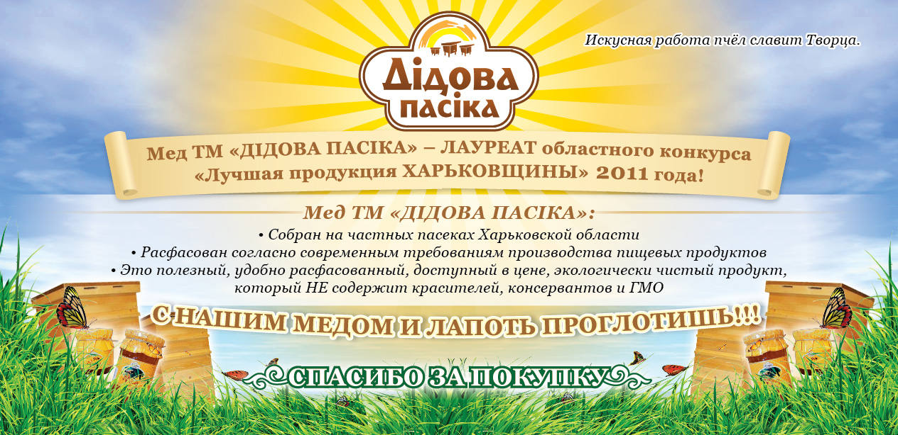

Майстерна праця бджіл славить Творця.
Бджоли-трудівниці  щороку дають людині сотні тисяч тонн меду.За висловом Д.Мора «Бджола - кращий маленький друг, який тільки є у людини на світі».
щороку дають людині сотні тисяч тонн меду.За висловом Д.Мора «Бджола - кращий маленький друг, який тільки є у людини на світі».
У скарбниці народної медицини бджолиний мед займає почесне місце.
Сьогодні більше 400000 українців є професійними бджолярами або любителями в галузі бджільництва. Кількість бджолиних сімей в Україні становить приблизно 3,5 мільйона , а середньорічне валове виробництво меду становить близько 70 тисяч тонн. Дана галузь демонструє стрімке зростання.
Україна посідає п'яте місце в світі за обсягами виробництва меду - після Китаю, Індії, Аргентини та США і має всі підстави називатися Європейським Медовим краєм.
Мед ТМ «ДІДОВА ПАСІКА» - ЛАУРЕАТ обласного конкурсу якості «Краща продукція Харківщини» 2011 року!
-
Мед ТМ «ДІДОВА ПАСІКА»:
Зiбраний на приватних пасіках Харківської області в екологічно чистих районах
Розфасований згідно сучасним вимогам виробництва харчових продуктів
Це корисний, зручно розфасований, доступний за ціною, екологічно чистий продукт, який НЕ містить барвників, консервантів і ГМО
ІЗ НАШИМ МЕДОМ І ЛАПОТЬ ПРОКОВТНУТИ МОЖНА !!!

Мед має дивовижні властивості: протягом багатьох років він зберігає свої якості, що не покривається пліснявою. Ця властивість меду використовували ще стародавні римляни - вони консервували їм рідкісну дичину, яку доставляли з далеких країн. Залита медом дичину зберігала свою свіжість, смак і вигляд. Відомо й інше. Тіло Олександра Македонського, який помер вчасно походу, було доставлено до столиці Македонії зануреним у мед. Лише з відкриттям антибіотиків, які були виявлені і в меді, стали зрозумілі його протимікробні властивості.
Щоб зібрати нектар для однієї ложки меду (30г), бджола повинна зробити 200 вильотів. Під час інтенсивного медозбору вона робить за день приблизно 10 вильотів. Таким чином, щоб пригостити вас ложечкою запашного меду, 200 бджіл повинні трудитися повний робочий день. Під час медозбору за нектаром літає близько половини бджіл родини. Такимобразом, в сім'ї масою 5 кг за нектаром вилітає 2,5 кг або 25 тис. Бджіл. Якщо кожна бджола зробить 10 вильотів, то всі вилітають бджоли зроблять 250 тис. Польотів і можуть принести в вулик 7,5 кг нектару. При цьому бджоли пролітають відстань, яку становить 2 млн. 750 тис. Кілометрів.
Малюкам, яким замість цукру дають мед, краще набирають вагу, не страждають діареєю. В їх крові збільшується кількість гемоглобіну і червоних кров'яних тілець, тому що залізо, мідь і марганець, які входять до складу меду, сприяють поліпшенню складу крові.
Щоб зібрати середню ношу нектару, бджола повинна відвідати приблизно 270 квіток гречки або 140 квіток соняшнику. У день бджола відвідує відповідно 2700 або 1400 квіток, а щоб зібрати нектар для однієї ложки меду, бджоли повинні попрацювати на 800 тис. Квіток гречки або 400 тис. Квіток соняшнику.

Мед, цей цінний концентрат сонячних променів, був виявлений людиною ще в часи, коли люди жили в печерах. Багато тисячоліть мед був єдиним підсолоджувальних засобом, ко¬торим розташовував людина, рідкісної та цінної їжею, якої, за словами легенд, харчувалися і боги Олімпу. 
Як нам відомо, мед складається на 75 відсотків з Сахаров, його поживний внесок в організмі в першу чергу енергетичний. Однак мед відрізняється від усіх інших продуктів, що містять вуглеводи (хліб, борошняні вироби, цукор, мармелад та інші) тим, що в цих продуктах цукри містяться в комплексних, важко переварюваних формах. Адже людський організм може засвоювати лише прості цукри.
Сахари в меді містяться саме в такій формі і негайно засвоюються, без попередньої обробки. Ложечка меду дає організму 60 калорій , які перетворюються на енергію швидше, ніж будь-який інший харчовий продукт.